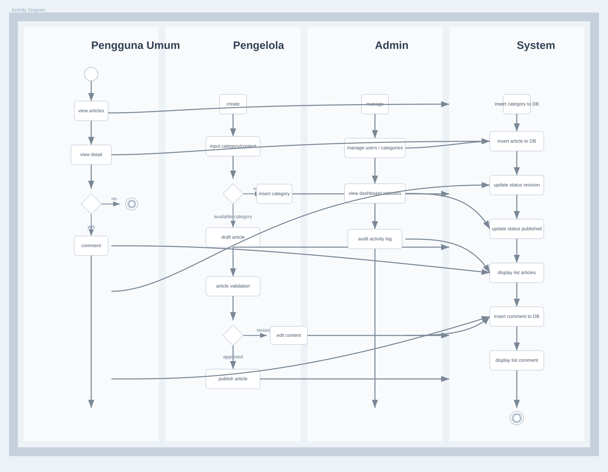

Dokumen ini memuat hasil pengujian black box, persiapan UAT, activity diagram, hasil pengujian, dan pembahasan untuk sistem COCONEXUS.
Pengujian black box dilakukan untuk memastikan seluruh fungsi sistem berjalan sesuai kebutuhan tanpa melihat implementasi kode secara langsung. Pada tahap ini, pengujian dilakukan melalui dua sumber validasi, yaitu skenario pengujian backend otomatis pada file backend/tests/auth-article.test.js dan pengujian API menggunakan Newman pada koleksi Postman yang tersimpan di docs/postman/.
Berdasarkan pengujian terbaru, backend otomatis memiliki 39 skenario dan seluruhnya berhasil. Pengujian Newman melibatkan 23 request dengan 36 assertion dan seluruhnya juga berhasil.
Perintah pengujian Newman:
npx newman run docs/postman/coconexus-api-newman.collection.json \ -e docs/postman/coconexus-api-newman.environment.json \ --reporters "cli,json" \ --reporter-json-export docs/newman-results/coconexus-api-newman-result.json
| No | Skenario Pengujian | Endpoint/Alur | Data Uji | Hasil yang Diharapkan | Hasil Aktual | Status |
|---|---|---|---|---|---|---|
| 1 | Registrasi publik mengabaikan role admin | /api/auth/register | role: admin dalam request | Akun tetap dibuat sebagai user | Status 201, role tetap user | Berhasil |
| 2 | User biasa mengakses dashboard admin | /api/admin/stats | Token user biasa | Akses ditolak | Status 403 | Berhasil |
| 3 | User biasa membuat artikel di route pengelola | /api/articles | Token user biasa | Akses ditolak | Status 403, success: false | Berhasil |
| 4 | Pengelola membuat dan mengambil artikel | /api/articles dan /api/articles/:id | Token pengelola valid | Artikel dapat dibuat dan dibaca | Status 201 dan 200 | Berhasil |
| 5 | Publisher mempublikasikan draft artikel | /api/articles/:id/status | Status published | Draft berubah menjadi published | Status 200, status published | Berhasil |
| 6 | Writer tidak boleh mempublikasikan artikel | /api/articles/:id/status | Token writer | Akses ditolak | Status 403 | Berhasil |
| 7 | Publisher mempublikasikan draft milik pengelola lain | /api/articles/:id/status | Token publisher | Artikel berhasil dipublikasikan | Status 200, status published | Berhasil |
| 8 | Tag manager mengelola kategori, writer tidak | /api/categories | Token tag manager dan writer | Tag manager berhasil, writer ditolak | Status 201 dan 403 | Berhasil |
| 9 | Comment moderator mengakses modul komentar, writer tidak | /api/comments?status=pending | Token moderator dan writer | Moderator berhasil, writer ditolak | Status 200 dan 403 | Berhasil |
| 10 | Pengelola tidak boleh mempublikasikan artikel milik penulis lain | /api/articles/:id/status | Token pengelola bukan pemilik | Akses ditolak | Status 403 | Berhasil |
| 11 | Login dengan password salah | /api/auth/login | Password tidak valid | Login ditolak | Status 401 | Berhasil |
| 12 | Registrasi dengan password lemah | /api/auth/register | Password pendek | Registrasi ditolak | Status 400 | Berhasil |
| 13 | Registrasi email duplikat aktif | /api/auth/register | Email yang sudah terdaftar | Registrasi ditolak | Status 409 | Berhasil |
| 14 | Daftar artikel admin tanpa token | /api/articles/admin | Tidak ada token | Akses ditolak | Status 401 | Berhasil |
| 15 | Daftar artikel admin dengan token invalid | /api/articles/admin | Token salah | Akses ditolak | Status 401 | Berhasil |
| No | Skenario Pengujian | Endpoint/Alur | Data Uji | Hasil yang Diharapkan | Hasil Aktual | Status |
|---|---|---|---|---|---|---|
| 16 | Admin membuat artikel tanpa body content | /api/articles/admin | Judul tanpa konten | Data ditolak | Status 400 | Berhasil |
| 17 | Admin mengunggah media dengan tipe tidak didukung | /api/uploads/articles | File .exe | Upload ditolak | Status 400, success: false | Berhasil |
| 18 | User berkomentar pada artikel draft | /api/articles/:id/comments | Token user dan artikel draft | Komentar ditolak | Status 404 | Berhasil |
| 19 | User mengirim komentar kosong pada artikel published | /api/articles/:id/comments | Isi komentar spasi | Komentar ditolak | Status 400 | Berhasil |
| 20 | Komentar pending disembunyikan sampai disetujui | /api/comments/:id/status | Status pending lalu approved | Komentar tidak tampil sebelum disetujui | Status sesuai alur | Berhasil |
| 21 | Moderator menolak komentar dan komentar tetap tersembunyi | /api/comments/:id/status | Status rejected | Komentar tidak tampil di publik | Status 200, komentar tetap tersembunyi | Berhasil |
| 22 | Daftar artikel publik menyembunyikan draft | /api/articles/published | Artikel draft dan published | Hanya published yang tampil | Status 200, draft tidak muncul | Berhasil |
| 23 | Detail artikel published mencatat article view | /api/articles/published/:id | x-coconexus-session-id | View tercatat | Status 200, view bertambah | Berhasil |
| No | Skenario Pengujian | Endpoint/Alur | Data Uji | Hasil yang Diharapkan | Hasil Aktual | Status |
|---|---|---|---|---|---|---|
| 24 | Admin membuat kategori dan menolak kategori duplikat | /api/categories/admin | Nama kategori sama | Kategori pertama tersimpan, duplikat ditolak | Status 201 dan 409 | Berhasil |
| 25 | Admin tidak dapat menghapus kategori yang masih dipakai artikel | /api/categories/admin/:id | Kategori masih berelasi | Penghapusan ditolak | Status 409 | Berhasil |
| 26 | Admin memperbarui role dan profil user | /api/users/admin/:id | role, full_name, bio | Data user berubah | Status 200, data terupdate | Berhasil |
| 27 | Daftar user admin menampilkan field job, department, dan division | /api/users/admin | Token admin valid | Field profil tampil lengkap | Status 200, field tersedia | Berhasil |
| 28 | Admin tidak dapat soft delete akun sendiri | /api/users/admin/:id | ID akun admin sendiri | Penghapusan ditolak | Status 403 | Berhasil |
| 29 | User memperbarui profil sendiri | /api/users/me/profile | full_name dan bio baru | Profil berubah | Status 200, profil terupdate | Berhasil |
| No | Skenario Pengujian | Endpoint/Alur | Data Uji | Hasil yang Diharapkan | Hasil Aktual | Status |
|---|---|---|---|---|---|---|
| 30 | Admin login lalu membuat draft artikel dengan kategori otomatis | /api/articles/admin | Judul, konten, kategori baru | Artikel draft tersimpan dan kategori dibuat otomatis | Status 201, status draft | Berhasil |
| 31 | Admin membuat artikel dengan dynamic product cards | /api/articles/admin | product_cards berisi beberapa item | Product card tersimpan dan terhubung ke artikel | Status 201, card tersimpan | Berhasil |
| 32 | Endpoint validasi artikel dapat mempublikasikan draft | /api/articles/admin/:id/status | Status published | Status artikel berubah menjadi published | Status 200, status published | Berhasil |
| 33 | Admin mengunggah file media artikel | /api/uploads/articles | File gambar valid | Media tersimpan dan path dibentuk otomatis | Status 201, media_type: image | Berhasil |
| 34 | Dashboard stats menampilkan dataset chart kategori dan komentar | /api/admin/stats | Token admin valid | Dataset statistik tersedia | Status 200, chart tersedia | Berhasil |
| No | Skenario Pengujian | Endpoint/Alur | Data Uji | Hasil yang Diharapkan | Hasil Aktual | Status |
|---|---|---|---|---|---|---|
| 35 | Endpoint available product cards hanya menampilkan card yang belum terhubung | /api/articles/admin/product-cards/available?article_id=... | Article ID utama | Hanya card yang belum linked yang tampil | Status 200, card unlinked tampil | Berhasil |
| 36 | Endpoint main articles menampilkan artikel induk untuk dropdown | /api/articles/admin/main-articles | Token admin valid | Hanya artikel induk yang muncul | Status 200, daftar sesuai | Berhasil |
| 37 | Admin membuat artikel detail yang terhubung ke product card terpilih | /api/articles/admin | parent_article_id dan linked_product_card_id | Artikel detail tersimpan dan card terhubung | Status 201, relasi tersimpan | Berhasil |
| 38 | Detail artikel publik menampilkan product cards untuk eksplorasi | /api/articles/published/:id | Artikel induk published | Product card dan artikel detail tampil | Status 200, card tampil | Berhasil |
| 39 | Admin memperbarui unlinked product cards dari editor artikel | /api/articles/admin/:id | product_cards baru | Product card lama terganti | Status 200, card terupdate | Berhasil |
Berdasarkan pengujian backend otomatis dan validasi API menggunakan Newman, seluruh skenario yang diuji memberikan respons sesuai dengan hasil yang diharapkan. Pengujian mencakup autentikasi dan otorisasi berbasis role, validasi data, pengelolaan kategori, user, artikel, media, product card, statistik dashboard, dan pencatatan view artikel.
Ringkasan: 39 skenario backend otomatis berhasil dan 23 request Newman berhasil dengan 0 kegagalan.
User Acceptance Test (UAT) dilakukan untuk menilai kesesuaian sistem dengan kebutuhan pengguna dari sisi alur penggunaan dan ketersediaan fitur. UAT pada sistem COCONEXUS disusun berdasarkan tiga aktor utama, yaitu pengguna umum, pengelola, dan admin.
| No | Aktor | Skenario UAT | Kriteria Penerimaan | Verifikasi | Status |
|---|---|---|---|---|---|
| 1 | Pengguna Umum | Mengakses halaman publik tanpa login | Daftar artikel dan navigasi publik tampil | Halaman publik dapat diakses dengan baik | [ ] Diterima |
| 2 | Pengguna Umum | Melihat daftar artikel published | Artikel published tampil dan draft tidak ikut muncul | Hanya artikel published yang tampil | [ ] Diterima |
| 3 | Pengguna Umum | Membuka detail artikel published | Konten artikel, media, dan product card tampil | Detail artikel dapat dibaca lengkap | [ ] Diterima |
| 4 | Pengguna Umum | Melakukan registrasi akun baru | Akun berhasil dibuat sebagai user biasa | Registrasi berhasil dan dapat login | [ ] Diterima |
| 5 | Pengguna Umum | Login dengan akun yang sudah terdaftar | Token atau session login aktif | User dapat masuk ke sistem | [ ] Diterima |
| 6 | Pengguna Umum | Mengirim komentar pada artikel published | Komentar tersimpan dengan status pending | Komentar berhasil dikirim | [ ] Diterima |
| 7 | Pengguna Umum | Mengirim komentar kosong | Sistem menolak input kosong | Validasi komentar berjalan | [ ] Diterima |
| 8 | Pengguna Umum | Memperbarui profil sendiri | Nama dan bio user berubah | Profil berhasil disimpan | [ ] Diterima |
| 9 | Pengguna Umum | Melihat artikel berdasarkan kategori | Artikel dapat difilter sesuai kategori | Filter kategori berjalan | [ ] Diterima |
| 10 | Pengguna Umum | Mencari artikel melalui search | Artikel yang relevan muncul di hasil pencarian | Search menampilkan hasil yang sesuai | [ ] Diterima |
| No | Aktor | Skenario UAT | Kriteria Penerimaan | Verifikasi | Status |
|---|---|---|---|---|---|
| 1 | Pengelola | Login dengan akun pengelola | Dashboard pengelola tampil sesuai role | Login berhasil | [ ] Diterima |
| 2 | Pengelola | Membuat artikel draft | Artikel tersimpan dengan status draft | Draft berhasil dibuat | [ ] Diterima |
| 3 | Pengelola | Melihat detail artikel yang dibuat | Detail artikel tampil lengkap | Artikel dapat dibuka dan diperiksa | [ ] Diterima |
| 4 | Pengelola | Mempublikasikan draft artikel sebagai publisher | Status artikel berubah menjadi published | Publish berhasil | [ ] Diterima |
| 5 | Pengelola | Gagal mempublikasikan artikel jika role tidak berwenang | Sistem menolak aksi publish | Akses dibatasi sesuai role | [ ] Diterima |
| 6 | Pengelola | Mengelola kategori sebagai tag manager | Kategori dapat dibuat melalui modul pengelola | CRUD kategori berjalan | [ ] Diterima |
| 7 | Pengelola | Gagal mengelola kategori jika role writer | Sistem menolak aksi kategori | Hak akses terjaga | [ ] Diterima |
| 8 | Pengelola | Mengakses daftar komentar sebagai moderator | Daftar komentar pending tampil | Modul moderasi komentar aktif | [ ] Diterima |
| 9 | Pengelola | Gagal mengakses komentar jika role writer | Sistem menolak akses komentar | Validasi otorisasi berjalan | [ ] Diterima |
| 10 | Pengelola | Menangani artikel milik pengelola lain sesuai hak publish | Publish hanya berhasil jika role berwenang | Aturan kepemilikan diterapkan | [ ] Diterima |
| No | Aktor | Skenario UAT | Kriteria Penerimaan | Verifikasi | Status |
|---|---|---|---|---|---|
| 1 | Admin | Login dengan akun admin | Dashboard admin tampil | Login berhasil | [ ] Diterima |
| 2 | Admin | Membuat artikel draft dengan kategori otomatis | Artikel dan kategori tersimpan | Proses pembuatan artikel berhasil | [ ] Diterima |
| 3 | Admin | Menambahkan dynamic product cards pada artikel | Product card tersimpan dan terhubung | Card artikel berhasil dibuat | [ ] Diterima |
| 4 | Admin | Memperbarui product cards dari editor artikel | Product card lama terganti dengan data baru | Update card berhasil | [ ] Diterima |
| 5 | Admin | Mengubah status draft menjadi published | Artikel berubah menjadi published | Publish artikel berhasil | [ ] Diterima |
| 6 | Admin | Membuat kategori baru | Kategori tersimpan | Manajemen kategori berhasil | [ ] Diterima |
| 7 | Admin | Menangani kategori duplikat | Sistem menolak kategori yang sama | Validasi duplikasi berjalan | [ ] Diterima |
| 8 | Admin | Menghapus kategori yang masih dipakai artikel | Sistem menolak penghapusan | Relasi data terlindungi | [ ] Diterima |
| 9 | Admin | Mengubah role dan profil pengguna | Role, nama, dan bio user berubah | Manajemen user berhasil | [ ] Diterima |
| 10 | Admin | Melihat daftar user lengkap dengan job field | Field job, department, dan division tampil | Data user tampil lengkap | [ ] Diterima |
| 11 | Admin | Mengunggah media artikel | File media tersimpan dengan benar | Upload berjalan baik | [ ] Diterima |
| 12 | Admin | Melihat statistik dashboard | Dataset chart tampil lengkap | Statistik dapat dibaca dengan baik | [ ] Diterima |
Activity diagram berikut menggambarkan alur utama penggunaan sistem COCONEXUS berdasarkan role pengguna. Diagram ini menampilkan jalur akses publik oleh pengguna umum, pengelolaan konten oleh pengelola, pengelolaan data oleh admin, serta proses penyimpanan dan tampilan pada sistem.

Hasil pengujian black box menunjukkan bahwa sistem COCONEXUS berjalan stabil pada seluruh skenario yang diuji. Semua skenario backend otomatis berhasil, dan seluruh request Newman juga berhasil dijalankan tanpa kegagalan.
| Metrik | Nilai |
|---|---|
| Total skenario backend | 39 |
| Skenario backend berhasil | 39 |
| Skenario backend gagal | 0 |
| Total request Newman | 23 |
| Request Newman gagal | 0 |
| Total assertion Newman | 36 |
| Assertion Newman gagal | 0 |
| Persentase keberhasilan | 100% |
| Total waktu Newman | 3,5 detik |
Persiapan UAT telah disusun untuk tiga aktor utama sistem. Total skenario UAT yang disiapkan adalah 32 skenario.
| Aktor | Jumlah Skenario | Fokus Pengujian |
|---|---|---|
| Pengguna Umum | 10 | Akses publik, registrasi, login, komentar, profil |
| Pengelola | 10 | Draft artikel, publish, kategori, komentar |
| Admin | 12 | User management, kategori, media, statistik |
| Metrik | Nilai |
|---|---|
| Rata-rata response time | 68 ms |
| Data diterima | 11,4 kB |
| Waktu eksekusi keseluruhan | 3,5 detik |
| Throughput | 6,57 request/detik |
Bagian ini membahas hasil pengujian yang telah dilakukan, interpretasi temuan, serta implikasi terhadap kualitas sistem.
Hasil pengujian menunjukkan bahwa sistem COCONEXUS telah memenuhi kebutuhan fungsional utama. Autentikasi dan otorisasi berbasis role berjalan baik, validasi input mencegah data tidak valid masuk ke sistem, workflow artikel berjalan konsisten, moderasi komentar dan pencatatan view berjalan sesuai rancangan, dan pengelolaan kategori, user, media, serta product card berhasil diintegrasikan dengan baik.
Skenario UAT yang disusun sudah mencakup alur utama penggunaan sistem oleh pengguna umum, pengelola, dan admin. Dengan cakupan tersebut, UAT dapat digunakan untuk memvalidasi kesesuaian sistem dengan kebutuhan pengguna akhir secara lebih menyeluruh.